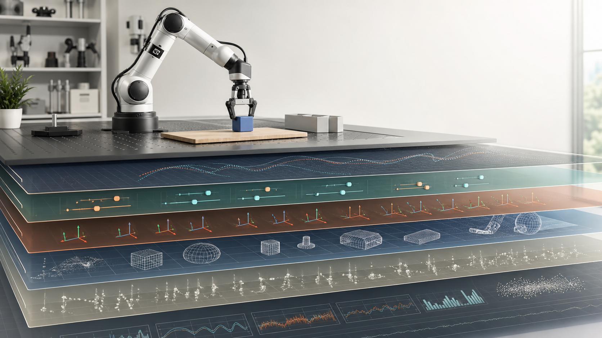
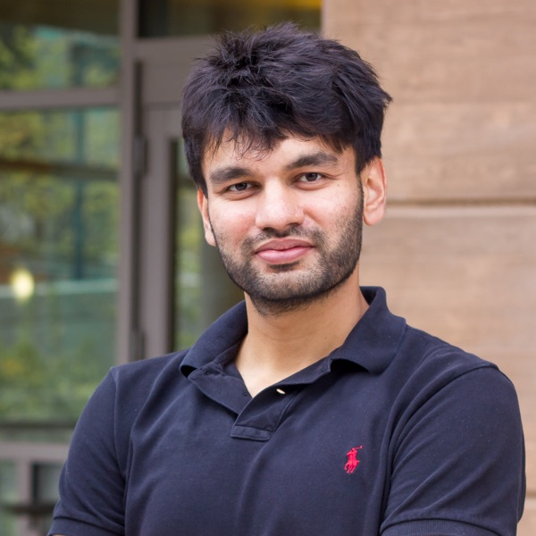

Beneath the Policy
How hardware, control, data infrastructure shape robot learning
Overview
Modern robot learning pipelines are stacks of design choices: embodiments and kinematics, motor and actuator dynamics, action space parameterizations, reset and demonstration distributions, observation modalities, reward shaping, simulator contact models and integration schemes, control frequencies, controller gains, and other low-level controller settings. Each is typically picked by convention, copied from prior code, or tuned silently. Yet recent results suggest that these “hidden” choices powerfully shape what policies can learn, how well they transfer, and which algorithms appear to win.
These choices show up at many levels of the stack. A motor-level setting, transmission choice, controller-gain default, or embodiment geometry can make one behavior easy and another unreachable; an action-space parameterization can silently determine what exploration is possible; a demonstration interface can filter which behaviors ever enter the dataset; a reset distribution can decide what counts as generalization; a simulator contact model or integration scheme can make some contact-rich strategies discoverable and others invisible. None of these are merely implementation details. They are learning-interface parameters: part of the experimental substrate that determines what policies can learn.
If true generally, this changes how the field should do science. Benchmarks comparing two algorithms while holding a hidden bias fixed are not really comparing algorithms. Architecture innovations may be re-discovering the effect of an unreported interface choice. We do not yet have a vocabulary, a methodology, or a community norm for studying the substrate beneath the policy.
Four Open Challenges
- Identification. What are the load-bearing hidden design choices in current robot learning pipelines, and how do we even measure them? Many are undocumented or buried in vendor defaults.
- Interaction. How do these choices compose? Are motor dynamics, embodiment geometry, controller gains, action spaces, control rates, and demonstration interfaces independent knobs, or do they interact in ways that make any single-axis study misleading?
- Methodology. What does a rigorous experiment look like in this space? Factorial designs, scaling-style ablations, and “model organism” task selection are all candidates, but the field has no shared template.
- Reporting. What should papers be required to report so that results are reproducible and comparable? Can we converge on a community checklist of design choices, analogous to model cards or datasheets?
We deliberately scope away from generic themes like “robot manipulation” or “foundation models.” The workshop is about the substrate that those headline results sit on.
Why Now
- Scale exposes the substrate. Large datasets like DROID and Open X-Embodiment mix data from heterogeneous hardware, embodiments, controllers, action spaces, and teleop interfaces, often without documentation. Practitioners are discovering that “data quantity” hides large variance in implicit interfaces.
- Reproducibility crises. Recent results in manipulation and locomotion have failed to replicate across labs, with post-hoc diagnosis pointing to hardware or interface settings, reset distributions, or simulator versions rather than algorithmic differences.
- The methodology gap. Empirical robot learning lacks the experimental scaffolding of adjacent fields—factorial design from biology, scaling laws from LLMs, model-organism choice from neuroscience. The community is ready for a serious conversation on how to do science here.
Schedule
The half-day is organized around four invited talks, a poster session, and a moderated panel. Speakers are asked to attend the full session so they can take part in the panel and engage with contributed work. Exact placement will depend on whether CoRL assigns the workshop to the morning or afternoon block.
| 8:30–8:40 | Opening framing. Organizers introduce the four open challenges and the reporting-artifact goal. |
| 8:40–9:10 | Speaker 1. Invited talk. |
| 9:10–9:40 | Speaker 2. Invited talk. |
| 9:40–10:10 | Speaker 3. Invited talk. |
| 10:10–10:30 | Lightning previews. Short contributed-paper previews and poster setup before the conference coffee break. |
| 10:30–11:00 | Coffee break and posters. Accepted papers are presented as posters during the conference coffee break. |
| 11:00–11:30 | Speaker 4. Invited talk. |
| 11:30–12:10 | Panel discussion. Speakers and contributed-paper authors discuss what papers should report and how the field should study the substrate, with time for audience discussion. |
| 12:10–12:30 | Closing synthesis. Themes from talks, posters, and panel; checklist takeaways and pointers to the post-workshop artifact. |
| 2:00–2:10 | Opening framing. Organizers introduce the four open challenges and the reporting-artifact goal. |
| 2:10–2:40 | Speaker 1. Invited talk. |
| 2:40–3:10 | Speaker 2. Invited talk. |
| 3:10–3:30 | Lightning previews. Short contributed-paper previews and poster setup before the conference coffee break. |
| 3:30–4:00 | Coffee break and posters. Accepted papers are presented as posters during the conference coffee break. |
| 4:00–4:30 | Speaker 3. Invited talk. |
| 4:30–5:00 | Speaker 4. Invited talk. |
| 5:00–5:40 | Panel discussion. Speakers and contributed-paper authors discuss what papers should report and how the field should study the substrate, with time for audience discussion. |
| 5:40–6:00 | Closing synthesis. Themes from talks, posters, and panel; checklist takeaways and pointers to the post-workshop artifact. |
Call for Papers
We solicit 4-page (excluding references) contributed papers on any aspect of the hardware, control, or data infrastructure beneath robot learning. In-scope contributions include:
- Empirical studies isolating a single design choice (motor dynamics, transmission or compliance, embodiment and kinematics, controller gains or other controller settings, action space, reward, reset distribution, demo interface, sim contact model class, domain randomization distribution, or solver and integrator choice) and characterizing its effect on learning.
- Factorial or scaling-style studies that vary multiple choices.
- Negative or surprising results where a design choice changed a published conclusion.
- Methodology papers proposing new experimental designs, metrics, or reporting conventions.
- Tools, benchmarks, or datasets that expose or normalize hidden choices.
Review. Double-blind, 2–3 reviewers per paper, via OpenReview. Acceptance criteria emphasize what the paper teaches us about the substrate, not state-of-the-art numbers. Best paper and best negative-result awards.
Format. All accepted papers receive a poster slot. A small subset of authors will be invited to join the panel discussion as anchor voices alongside the invited speakers.
Exclusions. Per CoRL 2026 policy, papers already accepted to the main CoRL 2026 conference are not eligible. Concurrent submissions to other venues are permitted if disclosed.
Submission deadline and OpenReview link will be posted here closer to the conference.
Workshop Artifact
We commit to producing a Design Choice Reporting Checklist v0.1 as the workshop artifact, synthesized by the organizers from the invited talks, contributed papers, and panel discussion. The checklist will be structured per design axis (hardware and embodiment, motors and actuation, kinematics, controller gains and control rates, action spaces, observations, demos, sim, reward, reset) with the goal of being adoptable by reviewers and authors at CoRL 2027. We will circulate a draft to invited speakers and contributed-paper authors for comment before public release.
We will additionally release a short whitepaper summarizing open challenges, candidate methodologies, and an agenda for community follow-up.
Organizers
Younghyo Park
MIT CSAIL
Lead contact
Antonia Bronars
MIT CSAIL

Pulkit Agrawal
MIT CSAIL
Contact: younghyo@mit.edu